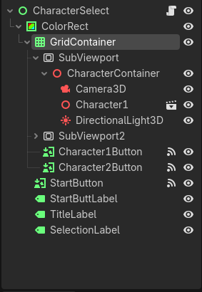
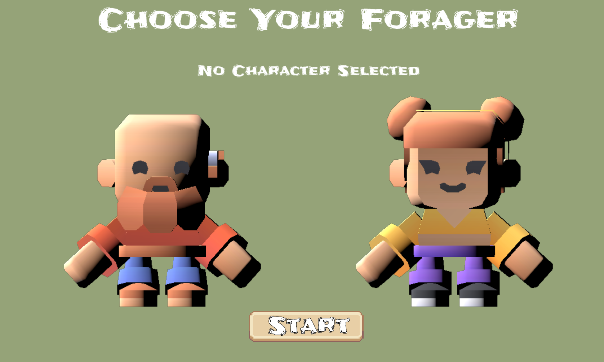

Section 9: Character Select Screen
Create a character selection screen with live 3D previews of each character using SubViewports.
Setting Up the Base Scene
- Press Ctrl + N to create a new scene
- Add a Control node as the root
- Rename it to "CharacterSelect"
- Set Layout to "Full Rect" in the Inspector
- Add a ColorRect as a child of the Control
- Set the ColorRect's Layout to "Full Rect"
- Change the ColorRect's color to your preferred background color
- Save the scene as "character_select.tscn"
What is a SubViewport?
A SubViewport is a separate render area inside your UI. It lets you display a live 3D scene inside a 2D UI element. This is perfect for showing rotating 3D character previews on a character select screen.
Building the Grid
- Add a GridContainer as a child of the ColorRect
- In the Inspector, set Columns to 2
- Position and size the GridContainer so it sits in the upper-middle area of the screen
Creating the First Character SubViewport
- Add a SubViewportContainer as a child of the GridContainer
- Add a SubViewport as a child of the SubViewportContainer
- Set the SubViewport's size to 400 x 400
- Inside the SubViewport, add a Node3D
- Rename it to "CharacterContainer"
Adding the 3D Scene Contents
Inside the CharacterContainer, add:
- A Camera3D positioned to look at the character
- Your character model (the Character scene)
- A DirectionalLight3D so the character is visible
- On the SubViewport settings, toggle on the Transparent Background option

Creating the Second SubViewport
- Select the SubViewportContainer from Step 2
- Press Ctrl + D to duplicate it
- The duplicate will appear as a second column in the GridContainer
- Select the duplicated character scene and change the model to Character 2
- Adjust the Camera3D if needed so both characters are framed consistently
Clickable Character Buttons
We'll use TextureButtons to display our clickable character selection buttons
- Select the GridContainer
- Add a TextureButton as a child
- Rename it to "Character1Button"
- Open the TextureButton's properties and set its texture ViewportTexture
- Select the first SubViewport
Adding the Second Button
- Duplicate the Character1Button
- Rename the duplicate to "Character2Button"
- Set its texture to the second SubViewport's ViewportTexture
Remaining UI Elements
These are siblings of the GridContainer, placed directly under the ColorRect:
- Add a Label for the title
- Rename it to "TitleLabel"
- Set its text to "Choose Your Character"
- Position it at the top of the screen
- Add another Label
- Rename it to "SelectionLabel"
- Set its text to "No Character Selected"
- Position it below the character previews
- Add a Button
- Rename it to "StartButton"
- Set its text to "Start Game"
- Position it at the bottom of the screen
Anchor Presets in the Inspector to quickly place UI elements at the top, center, or bottom of the screen.
Scripting the Selection Logic
Attach this script to the root Control node:
extends Control
@onready var character_1_button = $ColorRect/GridContainer/Character1Button
@onready var character_2_button = $ColorRect/GridContainer/Character2Button
@onready var selection_label = $ColorRect/SelectionLabel
@onready var start_button = $ColorRect/StartButton
var selected_character = ""
func _ready():
start_button.disabled = true
update_ui()
func _on_character_1_button_pressed():
selected_character = "Character1"
update_ui()
func _on_character_2_button_pressed():
selected_character = "Character2"
update_ui()
func _on_start_button_pressed():
if selected_character != "":
Global.selected_character = selected_character
get_tree().change_scene_to_file("res://scenes/Main.tscn")
else:
selection_label.text = "Please select a forager!"
func update_ui():
if selected_character != "":
selection_label.text = "Selected: " + selected_character
start_button.disabled = false
if selected_character == "Character1":
character_1_button.modulate = Color(0, 1, 0, 0.5)
character_2_button.modulate = Color(1, 1, 1, 0.5)
elif selected_character == "Character2":
character_2_button.modulate = Color(0, 1, 0, 0.5)
character_1_button.modulate = Color(1, 1, 1, 0.5)
else:
selection_label.text = "No Character Selected"
start_button.disabled = true
character_1_button.modulate = Color(1, 1, 1, 1)
character_2_button.modulate = Color(1, 1, 1, 1)$ColorRect/GridContainer/ because the buttons are children of the GridContainer. Adjust these paths if your scene structure differs.
Connecting the Signals
Now connect each button's pressed signal to its corresponding function:
- Select Character1Button
- Go to the "Node" tab next to the Inspector
- Double-click the pressed() signal
- Connect it to the CharacterSelect node
- Godot will auto-create
_on_character_1_button_pressed() - Repeat for Character2Button and StartButton
Storing the Selection Between Scenes
To pass the character choice from the select screen to the game, create an autoload script:
- Create a new script called "Global.gd"
extends Node
var selected_character = ""- Go to Project → Project Settings → Autoload
- Add Global.gd with the name "Global"
- Click "Add"
Global. The script in your player will look for Global.selected_character.
Testing the Scene
- Press F5 to run the game
- You should see both character previews rendering live in 3D
- Click Character 1 or Character 2
- The selected character should be highlighted in green
- The selection label should update
- The Start button should become enabled
- Click "Start Game" to load the environment

Why This Step Matters
The character select screen stores the player's choice in Global.selected_character, but the Player script needs to read that value and load the matching model at runtime.
This will be similar to how our prey and predator read their model
Change Your Player Scene Structure
Your player.tscn should have:
- Player (CharacterBody3D) — the root
- CollisionShape3D — the collision shape
- ModelContainer (Node3D) — an empty node for the model to be loaded into
- CameraTarget (Node3D) — for the camera to follow. You will need to reassign the camera's target property
There should not be a pre-loaded character model in the scene — it will be loaded dynamically.
Update the Player Script
Open player.gd and make sure the load_model() function reads from Global:
extends CharacterBody3D
const SPEED = 5.0
const JUMP_VELOCITY = 4.5
@onready var model_container = $ModelContainer
var current_model = null
var model_anim_player = null
func _ready():
load_model()
Input.set_mouse_mode(Input.MOUSE_MODE_CAPTURED)
func load_model():
# Clear any existing model
if current_model:
current_model.queue_free()
current_model = null
# Read the selection from Global
var character_name = "Character1" # Default fallback
if has_node("/root/Global"):
if Global.selected_character != "":
character_name = Global.selected_character
# Choose the model path
var model_path = ""
match character_name:
"Character1":
model_path = "res://assets/characters/character-male-b.glb"
"Character2":
model_path = "res://assets/characters/character-female-b.glb"
_:
model_path = "res://assets/characters/character-female-b.glb"
# Load and instantiate the model
if ResourceLoader.exists(model_path):
var model_scene = load(model_path)
current_model = model_scene.instantiate()
model_container.add_child(current_model)
print("Loaded character: ", character_name)
if current_model:
model_anim_player = current_model.get_node("AnimationPlayer")
if model_anim_player:
if model_anim_player.has_animation("idle"):
model_anim_player.play("idle")
else:
print("Character model not found: ", model_path)has_node("/root/Global") check prevents an error if the autoload isn't set up. The fallback ensures the game still runs with a default model.
Testing the Full Flow
- Press F5 to run the game
- The character select screen should appear first
- Choose Character 1 and click Start
- The game should load with Character 1's model
- Press F8 to stop and try again with Character 2
- The game should load with Character 2's model
Troubleshooting
- Model doesn't appear: Check that the model path in the script matches the actual file location
- Same model always loads: Confirm the character select screen is setting
Global.selected_charactercorrectly - Error about Global: Verify the autoload is set up in Project Settings → Autoload
- Old model lingers: Make sure
current_model.queue_free()is called before loading a new one